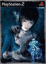
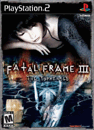
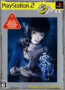

|  | 遊戲名稱：零～刺青之聲～
製作：TECMO 發行：SCEH ( 亞版 )
機種：PlayStation2
評級：--
語言：日文
發售日期：2005 年 7 月 26 日
| |
|  | 遊戲名稱：FATAL FRAME III The Tormented
製作 / 發行：TECMO ( 美版 )
機種：PlayStation2
評級：ESRB MATURE
語言：英文
發售日期：2005 年 11 月 8 日
- http://www.tecmogames.com/games.asp?id=20
| |
 | 遊戲名稱：PROJECT ZERO 3 The Tormented
製作：TECMO 發行：TAKE 2 Interactive ( 歐版 )
機種：PlayStation2
評級：BBFC 18
語言：英文
發售日期：2006 年 2 月 24 日
- http://www.projectzero3.de/
| |
|  | 遊戲名稱：零～刺青の聲～ PS2 the Best
製作 / 發行：TECMO ( 廉價版 )
機種：PlayStation2
評級：CERO C
語言：日文
發售日期：2006 年 7 月 6 日
| |
| 遊戲名稱：零～刺青の聲～ PS2 the Best
製作 / 發行：TECMO ( 新廉價版 )
機種：PlayStation2
評級：CERO C
語言：日文
發售日期：2007 年 11 月 22 日
| |
|